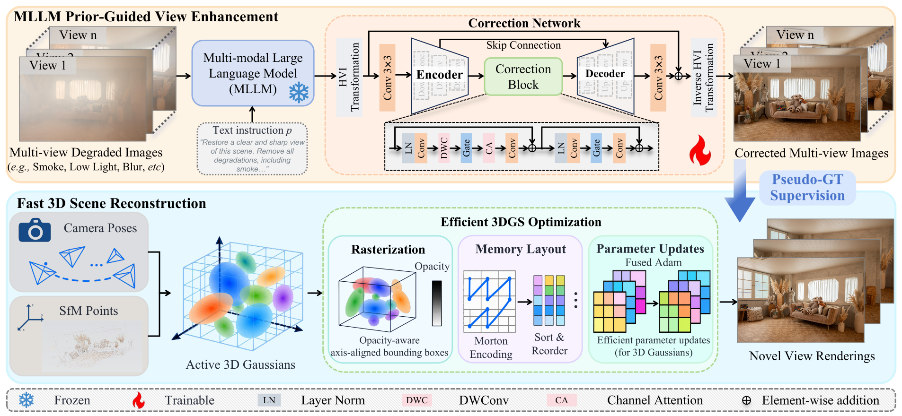
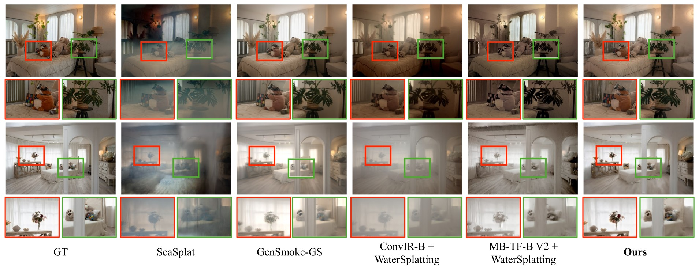
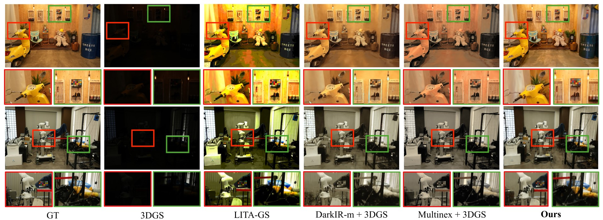
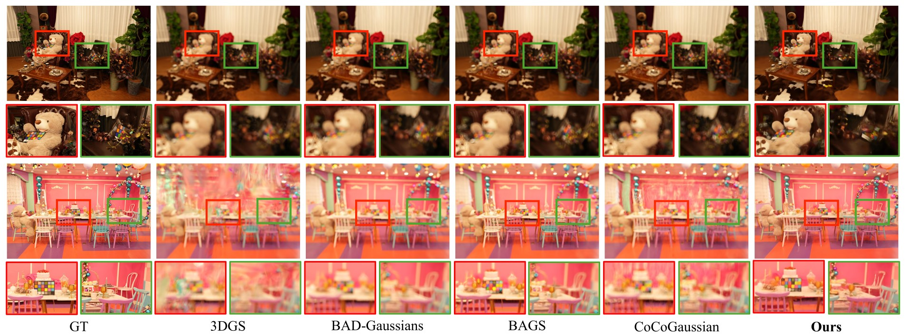
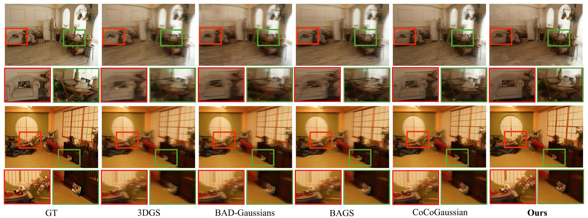
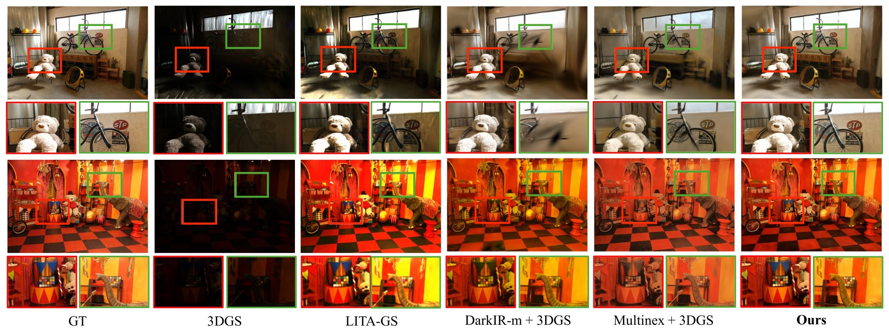

Novel view synthesis (NVS) in degraded scenes aims to reconstruct 3D scenes from multi-view observations affected by various degradations, and to generate clear and photorealistic images at unseen viewpoints. Despite recent advances, existing methods often rely on degradation-specific models, limiting their generalization across diverse extreme environments. Generative models provide rich visual priors, but their outputs often suffer from pixel misalignment and color deviations, which can propagate into the reconstructed 3D scene and compromise reconstruction quality. Furthermore, the high computational and memory costs of 3D reconstruction hinder the practical application of NVS in extreme environments. To this end, we propose MLLM-GS, a multimodal large language model (MLLM) prior-guided framework for fast NVS in extreme environments. MLLM-GS consists of two branches: MLLM prior-guided view enhancement and fast 3D scene reconstruction. The former leverages the rich visual priors of a frozen MLLM to enhance views under different severe degradations and introduces a lightweight correction network to reduce pixel shifts and color deviations in MLLM outputs. With supervision from only a few paired clean views, this branch produces reliable enhanced views for all degraded observations, providing pseudo-GT views for subsequent 3D reconstruction. The latter improves 3DGS efficiency by optimizing rasterization, Gaussian memory layout, and parameter updates, reducing redundant computation, memory-access overhead, and optimization costs. Extensive experiments on multiple degraded scenes demonstrate that MLLM-GS effectively handles various severe degradations and achieves high-quality NVS with significantly lower reconstruction time and memory consumption.

Overall pipeline of the proposed MLLM-GS framework. It consists of two branches: MLLM prior-guided view enhancement and fast 3D scene reconstruction. The former combines a frozen MLLM with a lightweight correction network trained using a few paired clean views to generate reliable pseudo-GT views for subsequent 3D reconstruction. The latter accelerates 3DGS optimization through efficient rasterization, memory layout, and parameter updates, enabling fast and high-quality NVS.

Qualitative comparison of NVS results under smoke scenes.

Qualitative comparison of NVS results under low-light scenes.

Qualitative comparison of NVS results under strong defocus blur scenes.

Qualitative comparison of NVS results under strong motion blur scenes.

Qualitative comparison of NVS results under varying exposure scenes.
MLLM-GS is an MLLM prior-guided framework for fast novel view synthesis in extreme environments. It combines a frozen MLLM with a lightweight correction network to provide reliable pseudo-GT supervision from only a few paired clean views. It also accelerates 3DGS optimization through rasterization, memory layout, and parameter update designs. Experiments show that MLLM-GS achieves high-quality NVS across diverse severe degradations with substantially lower reconstruction time and GPU memory consumption.
@article{wu2026mllmgs,
author={Zhiliang Wu and Xinye Zheng and Kun Li and Fei Wang and Hao Guo and Yanyan Wei and Guanghui Yue and Beier Zhu and Wei Zhou and Xun Yang},
title={MLLM-GS: Multimodal Large Language Model Prior-Guided Fast Novel View Synthesis in Extreme Environments},
journal={Under Review},
year={2026}
}